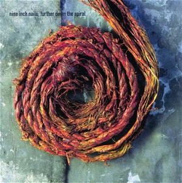

Further Down The Spiral (1995)
Industrial
| Artist | Nine Inch Nails |
|---|---|
| Year | 1995 |
| Genre | Industrial |
| Tracks | 11 |
Track List
| 1 | Piggy (Nothing Can Stop Me Now) | 4:02 |
| 2 | The Art Of Self Destruction, Part One | 5:41 |
| 3 | Self Destruction, Part Two | 5:37 |
| 4 | The Downward Spiral (The Bottom) | 7:28 |
| 5 | Hurt (Quiet) | 5:08 |
| 6 | Eraser (Denial; Realization) | 6:33 |
| 7 | At The Heart Of It All | 7:14 |
| 8 | Eraser (Polite) | 1:15 |
| 9 | Self Destruction, Final | 9:52 |
| 10 | The Beauty Of Being Numb | 5:06 |
| 11 | Erased, Over, Out | 6:00 |